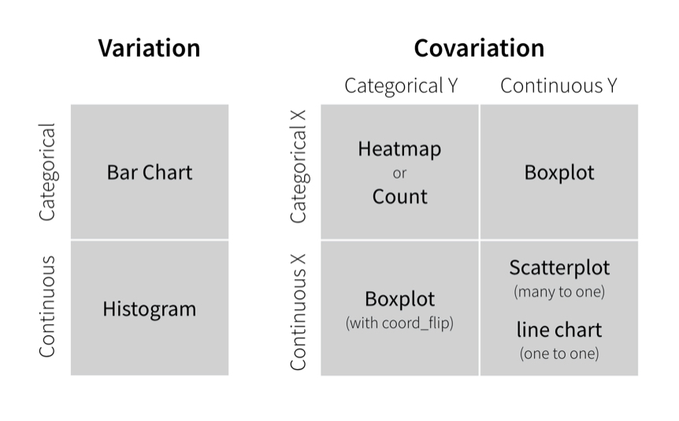

Unit 2 Tutorials: Data Viz & Tidy Data
ECI 586 Intro to Learning Analytics
Assignment
For Unit 2, we’ll take a deeper dive into exploring and tidying our data. The assigned Visualize Data primer is designed to increase your comfort level with the {ggplot} and useful chart types for examining single variables (variation) and relationships between variables (covariation). Specifically, you will learn how to make each type of plot show in the figure below. In the Tidy Your Data primer, you’ll learn a bit more about “tidy” data and and useful data wrangling techniques like reshaping and joining data sets.

Primers
This week you have two required primers to complete before we dig into our Unit 2 case study:
Visualize Data: For our third primer, we’ll learn some new ggplot2 “grammar” for making new types of plots and best practices for visualizing patterns within values and relationships between variables.
Tidy Your Data: In the three tutorials included in this primer, you’ll learn how to reshape the layout of any data set, separate a column into multiple columns and to reverse the process, and how to augment data sets with information from related data sets.
Assessment
Exercises (3 points each)
There is are two exercise files corresponding to each primer that you will need to work through this week. To access these files, navigate to our ECI 586 - Intro to LA RStudio Cloud workspace and open the following R script files:
unit-2-visualize-exercises.R
unit-2-tidy-exercises.R
After you have completed the primers and the exercise R scripts, click the “Mark as done” button on our ECI 586 Moodle course page to notify me that you have completed the assignment.
If you have questions about the tutorials or exercises, I encourage you to reply to the Questions and Troubleshooting post, especially if others might benefit from the response to question. You are also more than welcome to respond to the questions posted by your peers. However, I do ask that you try work through the exercises independently before reaching out for support.